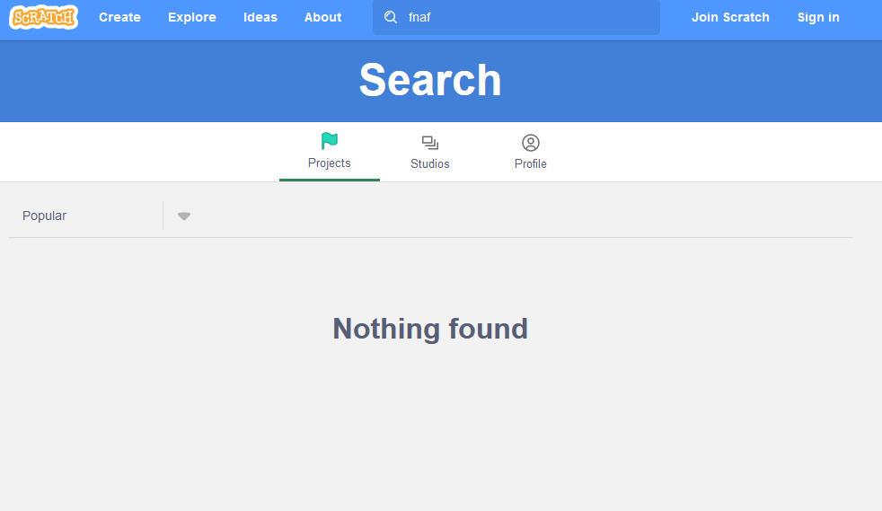

This maybe sounds too ambitious. Link to this site was sent to you by some evil spammers (they're so inappropriate!). However, your scratch account and all your projects are in danger.
Firstly, you can be banned at any moment. The scratch team consists of maximum 84 people and some of them have already left scratch. And for site that is visited by millions of people every day this is very few moderators. And this is where automoderation kicks in. This means that any of your projects can be automatically taken down "if several scratchers reported it". That's where mass and false reporting starts. And only Scratch Team is responsible for this. In early scratch years everyone older 18 years could become a moderator. But they canceled this program.
But hey! I can write an appeal! - you might say. Well, the problem with this is the same: scratch team has a lot of things to do besides appeals and even if they respond you, they can reject your appeal too.
Secondly, there is so-called Not For Everyone content on scratch. Let's try to search "FNAF" on Scratch. You can try it yourself.
As we can see, nothing found. But there are thousands of project related to FNAF in Scratch. But you can't find any of them because of this censorship.
Thirdly, lots of hackers have appeared in scratch since 2021. Actually, it's very simple to protect your account from them: just create a long and complex password. It can be name of your favourite character or just a bunch of random letters. But hackers exist on every site. The real problem is scratch team. The didn't do anything to stop these hackers. Moreover, they created them. If these people weren't banned one day, they wouldn't start hacking.
But Scratch Team blocks people to protect other scratchers! - yes, but it's only 5% of all bans. Don't forget that Scratch is used mostly by children and they can sometimes create conflicts from nothing. Сhildren do not understand criticism well, they may react too harshly and start conflicts. Not because they are InApPrOpRiAtE, but because they're kids. And ban is not how you, as a creator of a site for kids, should react. I think you should investigate every single conflict instead. And it will require a lot of moderators. And many people on Scratch actually meet the criteria and agree to do this absolutely for free. Scratch must ban only people who came to the site just for the sake of ridicule and pedophiles. And trust me, they are not more than 1% of people who visit scratch.
So, what can you do? Well, not so much. In my opinion you can contact with your scratch friends using sites with so-called "unmoderated chat" (The Scratch Team can't control everything you write), such as Discord, Telegram, Fandom etc. You can also protest and support movements like #BringBackManagersRights.
Ты говоришь по-русски? Жми сюда!